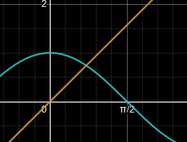
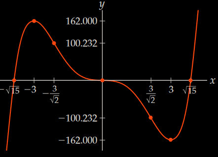
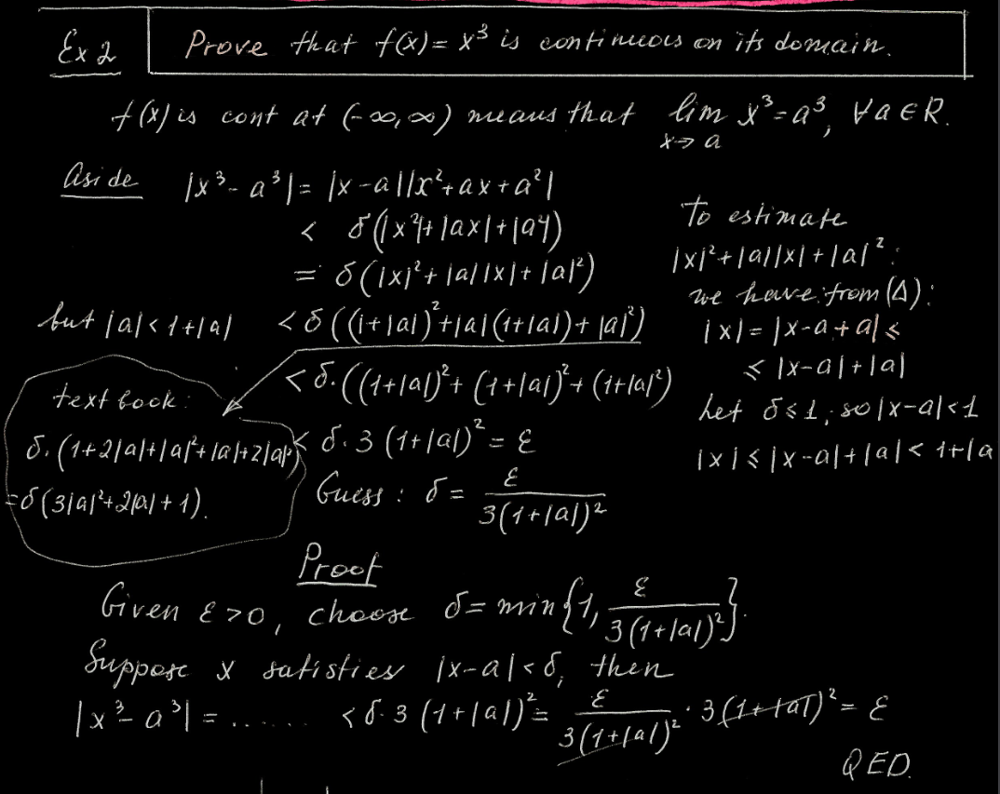
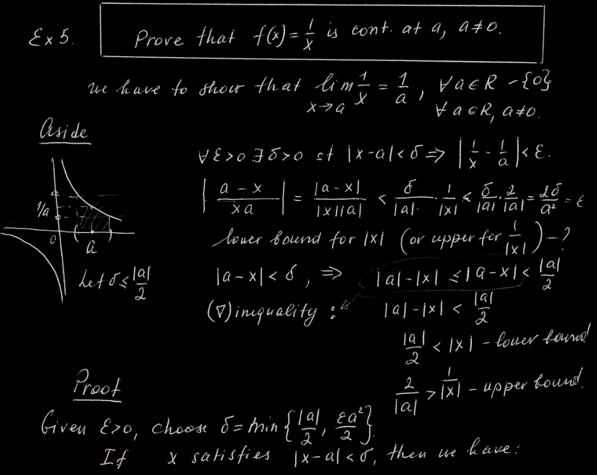

\begin{aligned} f'(x)&=\frac{dy}{dx}\approx\frac{\Delta y}{\Delta x}=\frac{f(x+\Delta x)-f(x)}{\Delta x}\\ \therefore\;\Delta y&=f(x+\Delta x)-f(x)\\ dy&=f'(x)dx\\ \end{aligned}
L(x)=b+y'(a,b)(x-a)\quad b=y(a) - approx \sqrt{16.1} (\sqrt{x})'=\lim\limits_{h\to0}\frac{\sqrt{x+h}-\sqrt x}h=\lim\limits_{h\to0}\frac{x+h-x}{h(\sqrt{x+h}+\sqrt x)}=\frac1{2\sqrt x}\\ \therefore\;L(x)=\sqrt a+\frac1{2\sqrt a}(x-a)\\ \text{let }a=16\\ \therefore\;L(16.1)=4+\frac18(16.1-16)=4.0125
x_{n+1}=x_n-\frac{f(x_n)}{f'(x_n)}
approx root of f(x)=x^3-2x-5 (3
decimals) 1. IVT \begin{aligned}
\because\;&f(1)=-6<0\quad f(3)=15>0\\
\therefore\;&\text{let }x_0=2\in(1,3)
\end{aligned} 2. find derivative f'=\lim\limits_{h\to0}\frac{f(x+h)-f(x)}h=...=3x^2-2
3. iterate (need to find same decimals twice) \begin{aligned}
&x_1=x_0-\frac{f(x_0)}{f'(x_0)}=...\approx2.1000\\
&x_2=x_1-\frac{f(x_1)}{f'(x_1)}=...\approx2.0946\\
&x_3=x_2-\frac{f(x_2)}{f'(x_2)}=...\approx\textcolor{aqua}{2.0946}
\end{aligned} ### Caution 1. make sure IVT works 2. to choose
x_0 for \cos
x-x=0 - \cos x=x

- \because intersection in (0,\pi/2) - \therefore choose x_0=1\in(0,\pi/2)\begin{aligned} (\sin x)'&=\cos x&& (\cos x)'=-\sin x&&(\tan x)'=\sec^2x\\ (\csc x)'&=-\csc x\cot x&&(\sec x)'=\sec x\tan x&&(\cot x)'=-\csc^2x\\ \end{aligned} \begin{aligned} (\text{asin }u)'&=\frac{u'}{\sqrt{1-u^2}}&&(\text{atan }u)'=\frac{u'}{1+u^2}&&(\text{asec }u)'=\frac{u'}{|u|\sqrt{u^2-1}}\\ (\text{acos }u)'&=-(\text{asin }u)'&&(\text{acot }u)'=-(\text{atan }u)'&&(\text{acsc }u)'=-(\text{asec }u)' \end{aligned} \sinh(x)=\frac{e^x-e^{-x}}2\quad\cosh(x)=\frac{e^x+e^{-x}}2\quad\tanh(x)=\frac{\sinh(x)}{\cosh(x)}\\ \cosh^2x-\sinh^2x=1\\\,\\ \begin{aligned} (\sinh x)'&=\cosh(x)&&(\text{csch }x)'=-\text{csch }(x)\text{ coth}(x)\\ (\cosh x)'&=\sinh(x)&&(\text{sech }x)'=-\text{sech }(x)\tanh(x)\\ (\tanh x)'&=\text{sech}^2(x)&&(\text{coth }x)'=-\text{csch}^2(x)\\ \end{aligned} (\text{asinh }u)'=\frac{u'}{\sqrt{u^2+1}}\quad(\text{acosh }u)'=\frac{u'}{\sqrt{u^2-1}}\quad(\text{atanh }u)'=\frac{u'}{1-u^2}
+ or
- on intervals divided by y-int and VA↗ or ↘ (divided by cps)∪ or ∩ (divided by ips)\begin{aligned} f(x)&=x^5-15x^3=x^3(x-\sqrt{15})(x+\sqrt{15})\\ f'(x)&=5x^4=5x^2(x+3)(x-3)\\ f''(x)&=20x^3-90x=10x(\sqrt2x-3)(\sqrt2x+3) \end{aligned}
polynomial \therefore\text{Dom}(f)=\mathbb{R}
f(x)=0 when x=0 and x=\pm\sqrt{15}\approx\pm3.87
f(0)=0
\because
f(-x)=(-x)^5-15(-x)^3=-x^5+15x^3=-f(x)
\therefore f(x) is odd
\therefore only need to consider [0,\infty)
\because\text{Dom}(f)=\mathbb{R}\quad\therefore
no VA
\because\lim\limits_{x\to\infty}f(x)=\infty\quad\therefore
no HA
no SA
f'(x)=0 when x=0 and x=\pm3
f''(x)=0 when x=0 and x=\pm\frac3{\sqrt2}\approx\pm2.12
(test values, then) chart
0 2.12 3 3.87
───┼────────────────────────────┼────────>
│f(1) < 0 │f(4) > 0
f │ neg │ pos
───┼──────────────────────┼─────┴────────
│f'(1) < 0 │f(4) > 0
f' │ ↘ min ↗
───┼──────────────┼───────┴──────────────
│f''(1) < 0 │f''(3) > 0
f''│ ∩ IP ∪
───┴──────────────┴──────────────────────
🭿
0 ─── 2.12 ─── 3 ─── 3.87 ───>
🭾 🭼 🭿draw graph (with left side mirrored)

if f is continuous on [a,b], then f has an abs max and an abs min at [a,b]
if f is continuous on [a,b] and diffable on (a,b) and f(a)=f(b)=0, then \exists c\in(a,b)\enspace f'(c)=0
if f is continuous on [a,b] and diffable on (a,b), then \textcolor{#66ccff}{\exists c\in(a,b)\quad\frac{f(b)-f(a)}{b-a}=f'(c)}
every nonempty set of real numbers that is bounded from above has a Supremum
every nonempty set of real numbers that is bounded from below has a Infimum
let M=\text{Sup }S and \varepsilon>0\quad\therefore\;\exist s\in S\text{ st }M-\varepsilon<s\le M
let m=\text{Inf }S and \varepsilon>0\quad\therefore\;\exist s\in S\text{ st }m\le s<m+\varepsilon
\lim\limits_{x\to c}e^x=e^c - prerequisite \begin{aligned} \lim\limits_{h\to0}(1+h)^{\frac1h}&=\lim\limits_{n\to\infty}(1+\frac1n)^n=e\\ \lim\limits_{h\to0}\frac{e^h-1}h&=1 \end{aligned} - proof \begin{aligned} \lim\limits_{x\to c}e^x&=\lim\limits_{h\to0}e^{h+c}=\lim\limits_{h\to0}e^c\cdot\lim\limits_{h\to0}e^h=e^c\lim\limits_{h\to0}\left(\frac{e^h-1}h\cdot h+1\right)\\ &=e^c(1\cdot0+1)=e^c\quad\blacksquare \end{aligned}
\begin{aligned}&\textcolor{aqua}{\lim\limits_{x\to c}g(x)\le\textcolor{coral}{\lim\limits_{x\to c}f(x)}\le\lim\limits_{x\to c}h(x)}\land\textcolor{lime}{\lim\limits_{x\to c}g(x)=\lim\limits_{x\to c}h(x)=L}\\\implies&\lim\limits_{x\to c}f(x)=L\end{aligned}

